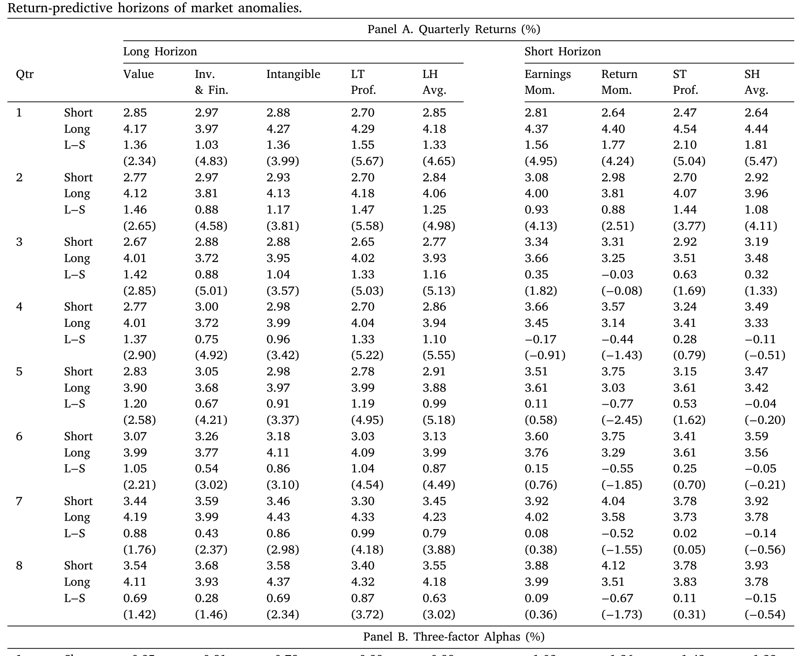
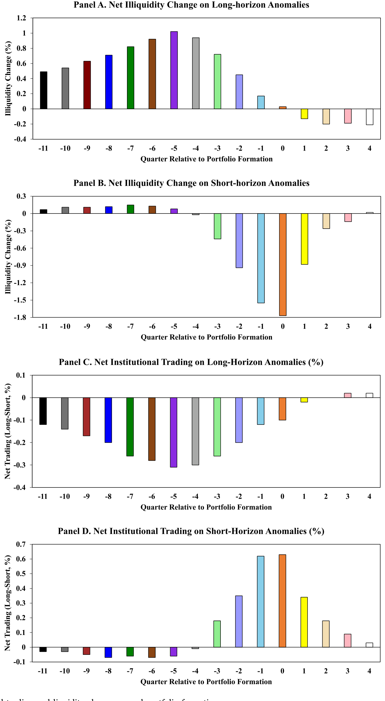
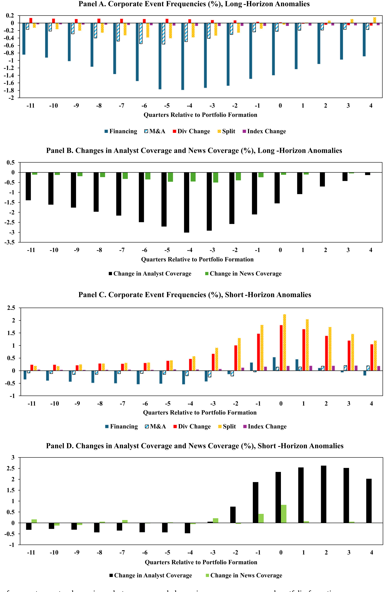
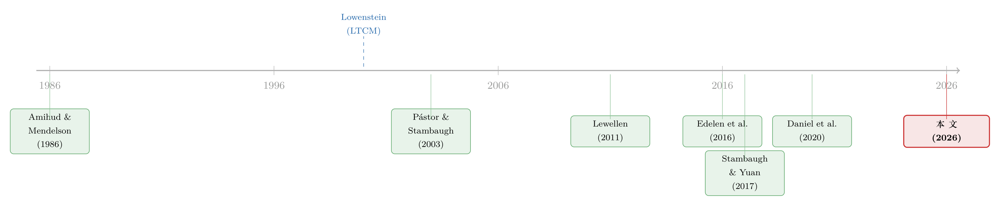

流动性的方向感：异象多空组合，其实并不「流动性中性」
本文读的是 Cao, Liang, Yao & Zhang (2026, Journal of Financial Economics)：市场异象并非「流动性中性」——长周期异象的多空组合是提供流动性的「收敛交易」，短周期异象则是消耗流动性的「发散交易」。正因为如此，机构投资者会在长周期异象上「站错边」、在短周期异象上「站对边」；而流动性偏好不仅解释了这种诡异的交易方向，甚至会反过来放大异象本身。
1 引言：一笔「站错边」的交易
先讲一个老故事。
1998 年，长期资本管理公司（Long-Term Capital Management, LTCM）轰然倒塌。Lowenstein (2000) 在复盘这场灾难时点出了一个细节：这家由两位诺奖得主坐镇的对冲基金，它最得意的那些交易策略，本质上都是买入不流动的证券、卖空流动的证券。最经典的就是所谓的「收敛交易（convergence trade）」——买入流动性差、价格被压低的旧券（off-the-run Treasuries），同时卖空流动性好、价格偏高的新券（on-the-run Treasuries），赌两者的价差终将收敛。
这套交易赚的是什么钱？说穿了，它赚的是为市场提供流动性的报酬。你拿着不好卖的东西、把好卖的东西让给别人，市场迟早会为你这份「不方便」付费。固定收益市场里关于新旧券利差的研究（Krishnamurthy, 2002；Goldreich et al., 2005；Pasquariello & Vega, 2009）已经把这个机制讲得很透。
故事讲到这儿，一个自然的问题就冒出来了：股票市场里那些被量化机构（AQR、GSAM、BlackRock 的系统化团队）天天在做的「异象套利」策略，是不是也带着这种流动性特征？
这正是本文的起点。而它的野心，是把一个被整个文献长期忽略的问题，系统地摆到台面上来。
2 一个被忽视的问题：多空组合，真的「流动性中性」吗？
过去几十年，学术界挖出来的市场异象（market anomaly）多到泛滥。光是 Green et al. (2017) 就梳理了上百个特征，以至于「因子动物园」成了行业黑话（关于这些因子是从哪里冒出来的，可参见《弱替代：因子动物园是从哪里冒出来的？》 与《压缩横截面：因子动物园的尽头，不是更少的因子，而是更聪明的收缩》）。
我们早就知道，大多数异象在小盘股、不流动股里更强（Fama & French, 2008）。但本文问的是一个截然不同的问题：
异象是否系统性地在叫你「买入不流动的股票、卖空流动的股票」？换句话说，多空异象组合常被设计成「市场中性（market neutral）」，但它们是否也「流动性中性（liquidity neutral）」？如果不是，是什么经济力量在驱动这种流动性敞口？
这个问法的精妙之处在于：它不是问异象在哪类股票上更强，而是问异象多空两条腿（long/short legs）之间，存在不存在一个有方向的流动性差。一旦这个差不为零，整个套利策略就暗含了一笔流动性赌注——就像 LTCM 那样。
接着，本文真正关键的一步，是把这个流动性敞口和异象的收益预测周期挂上钩。
3 识别的脚手架：异象、流动性与机构交易怎么度量
要把上面的问题做实，得先把三样东西量化清楚。
第一，异象按「收益预测周期」分类。 本文沿用 Daniel et al. (2020) 的框架，选取 32 个个体异象，归入 7 大类。其中四类——价值、投资与融资、无形资产投资、长期盈利能力——预测的是长周期收益（一年以上）；另外三类——盈利动量、收益动量、短期盈利能力——预测的是短周期收益（通常一年以内）。
Daniel et al. (2020) 给这两类异象配了不同的行为故事：长周期异象源于投资者过度自信导致的错误定价被缓慢纠正，所以基于它们的策略像「收敛交易」；短周期异象源于投资者对新信息（如盈利惊喜）的反应不足，基本面冲击会进一步拉大股票间的价格分散，所以基于它们的策略反而是「发散交易（divergence trade）」。有意思的是，Stambaugh & Yuan (2017) 用完全不同的方法（变量相关性）做分类，得到的 MGMT 因子和 PERF 因子，几乎正好对应长、短周期两组——这是一个很强的旁证。
第二，流动性用 Amihud (2002) 非流动性比率度量。 这是全文唯一一个需要写公式的地方：
直觉很简单：单位成交额能把价格推动多少。分子大、分母小，说明一点点交易就能掀起大波澜，股票就越不流动。考虑到美股流动性整体随时间改善、且 NASDAQ 与 NYSE/AMEX 的成交量口径不同，本文不直接用 ILLIQ，而是在两个交易所内分别做横截面百分位排序，得到 0 到 99 的排名变量 ILQ（越大越不流动）。
第三，机构交易用 13F 持仓变化度量。 机构持股比例 %Inst 是全部 13F 机构持股除以总股本，机构交易 ΔInst 是 %Inst 的变化。长周期异象看组合形成前 6 个季度的交易，短周期异象看前 2 个季度；流动性变化 ΔILQ 的窗口各比交易窗口多一个季度（分别为 7 和 3 季度），以容纳机构对滞后流动性变化的反应。样本期为 1980–2021，剔除金融业（SIC 6000–6999）与价格低于 \$5 的股票。
4 主要结果（一）：异象的流动性，是有「方向」的
先验证周期分类站得住脚。把股票按每个异象变量分三组、构造多空组合、持有 8 个季度，结果如表 1：长周期四类的多空收益与三因子 alpha 在第 4 季度之后持续为正，聚合的「LH Avg.」组合在全部 8 个持有季度都显著为正；而短周期三类的显著收益主要集中在前几个季度，之后衰减。周期差异确实存在。

Table 1
然后是本文的第一个核心发现。在组合形成之前：
- 对长周期异象，空头腿（要卖空的股票）显著更流动、而且流动性改善幅度更大；多头腿（要买入的股票）反而更不流动。这意味着「买入不流动、卖空流动」——和新旧券收敛交易一模一样，是一笔提供流动性的交易。
- 对短周期异象，方向完全反过来：多头腿更流动、流动性改善更大。于是发散交易表现出消耗流动性的特征。
一句话：长周期异象 = 提供流动性的收敛交易，短周期异象 = 消耗流动性的发散交易。多空组合远非「流动性中性」，它的流动性敞口的符号，由异象的预测周期决定。
5 主要结果（二）：机构为什么「站错边」
这就接上了近年文献里一个让人挠头的观察：机构投资者非但不积极利用异象，反而逆着异象做。Lewellen (2011) 发现机构的总持仓几乎就是市场组合，对任何知名异象都没有系统性倾斜；Edelen et al. (2016) 更尖锐——机构倾向于买入异象预测低收益的股票、卖空异象预测高收益的股票，等于在亲手放大异象。这和「机构纠正错误定价、改善市场效率」的传统认知（如 Chordia et al., 2011）格格不入。
本文给出的答案漂亮地呼应了流动性特征。定义净机构交易为多头腿与空头腿的机构持股变化之差，结果是：组合形成前，长周期异象的净机构交易显著为负（站错边），短周期异象显著为正（站对边）。

Figure 1: Quarterly institutional trading and liquidity change around portfolio formation
关键的一步来了：用回归剥离出机构交易中与流动性相关的成分。结果发现，对长周期异象，净的「流动性相关」机构交易显著为负，它一项就解释了形成前 6 个季度里89% 的负向净机构交易；对短周期异象，流动性相关成分约占形成前两季度正向净机构交易的略低于 50%。也就是说，机构在长周期异象上「站错边」这件诡异的事，绝大部分是被流动性偏好驱动的。
但相关不等于因果——也许是机构交易反过来改善了流动性？为切断这层反向因果，本文转向外生的公司事件。
6 真正关键的一步：把流动性变化「外生化」
很多异象变量天生就和公司事件绑在一起。比如投资类的长周期异象，捕捉的本就是过去两三年由融资和投资活动驱动的公司扩张。于是本文聚焦几类对机构交易而言大体外生的事件：股票与债券增发、并购、股利变动、拆股，以及标普 500 成分股调整；再加上分析师覆盖和新闻覆盖的变化，作为更广义的流动性驱动事件代理。
结果如图 2：这些公司事件、以及分析师与新闻覆盖的增加，都同时显著地提升流动性、并吸引机构买入。更重要的是，对长周期异象，空头腿在五类事件中的四类上事件频率更高、分析师与新闻覆盖增加也更多——这和「空头腿更流动」的模式完全对得上。

Figure 2: Frequencies of corporate events, change in analyst coverage and change in news coverage around portfolio formation
据此构造一个事件驱动的机构交易成分，它解释了长周期异象上形成前 6 个季度85% 的负向净机构交易。换句话说，是公司事件这类外生因素，先改善了某些股票的流动性，再把偏好流动性的机构吸引过去——结果机构就「顺手」站到了长周期异象的错误一边。（不过，事件驱动成分对短周期异象上的机构交易解释力有限。）
可是，事件与机构交易的关系，会不会和机构的流动性偏好毫无关系、纯属别的因素？为此本文又补了两层直接证据：
其一，用组合规模代理流动性偏好。 用一个外生特征——机构管理的组合规模——来刻画流动性偏好的强弱。发现流动性偏好强的机构，对外生流动性冲击反应强烈，并且确实倾向于逆着长周期异象交易；而流动性偏好弱的机构则没有这种倾向。
其二，两次最小报价单位（tick size）改革的准自然实验。 利用 1997 年和 2001 年最小 tick size 下调这两次外生流动性冲击——这两次冲击不是由公司事件驱动的——本文证明它们以与流动性偏好一致的方式，显著影响了机构在异象上的交易。这一刀切得很干净：把「流动性偏好」这个机制从「公司基本面」里剥离了出来。
（顺带一提，流动性「提供 vs. 消耗」的二分，本身就是个深刻的视角；关于流动性供给方如何因风险与约束而行动，可参见《无风险市场里的风险厌恶：是谁给做市商系上了「风险限额」这根绳》 与《高得反常的 ETF 卖空：到底是违规，还是流动性的另一副面孔？》。）
7 反转：流动性，可能在「放大」异象
到这里，故事本可以收尾了。但本文最后甩出一个反直觉的资产定价含义。
传统智慧说，机构投资者和流动性都是改善市场效率的力量。本文却发现：对长周期异象，当流动性相关的机构交易站在错误方向时，异象组合的收益显著更高；而与流动性无关的那部分机构交易，对异象幅度则没有影响。
于是结论是——机构基于流动性偏好交易时，恰恰在加剧异象，而非纠正它。流动性非但没有提升市场效率，反而通过把机构「轻轻推向错误方向」，放大了异象的幅度。这和「非流动性限制套利、阻止机构交易异象」的旧故事（Ali et al., 2003；Lam & Wei, 2011）也不一样：这里的问题不是机构不能交易，而是它们因为偏好流动性而主动站错了边。
8 文献脉络
把这条线索捋一捋。
最早，流动性被确立为资产定价的核心要素——Amihud & Mendelson (1986) 开了价差与预期收益的头，Pástor & Stambaugh (2003) 把流动性风险做成了系统性因子。与此同时，LTCM 在 1999–2000 年间的兴衰（Perold, 1999；Lowenstein, 2000）给「收敛交易=提供流动性」提供了一个教科书级的实物样本。

接着，机构与异象的关系被推上前台：Lewellen (2011) 发现机构总持仓不偏向异象，Edelen et al. (2016) 进一步发现机构在形成前逆向交易、放大异象。这两篇制造了一个谜：本该改善效率的机构，为何站错边？
然后，Stambaugh & Yuan (2017) 用错误定价因子把异象归并为 MGMT 与 PERF 两组，Daniel et al. (2020) 则从行为视角把异象按长/短预测周期一分为二——这正是本文的脚手架。本文站在 Daniel et al. (2020) 的肩膀上，第一次系统刻画了异象的流动性特征，把它追溯到外生的公司事件，并用它解开了 Edelen et al. (2016) 留下的那个谜。
评论与延伸（Q&A + 研究方向）
(a) 几个可能的疑问
Q：这和「异象在小盘、不流动股里更强」（Fama-French, 2008）到底有什么不同？
完全是两回事。前者讲的是异象在哪一类股票里更强，是个「水平」问题；本文讲的是异象多空两条腿之间存在一个有符号的流动性差，是个「方向」问题。一个组合完全可以两条腿都在不流动股里，却依然不是流动性中性的。
Q：长周期异象上机构「站错边」，会不会只是机构慢、信息滞后，而非流动性偏好？
本文的回答是：把交易拆成「流动性相关」与其余两块后，前者一项解释了 89% 的逆向交易；再用组合规模代理偏好、用 1997/2001 两次 tick size 改革做外生冲击，都指向流动性偏好这个机制。信息滞后解释不了「为什么偏偏是偏好流动性的机构站错边、偏好弱的不站错边」。
Q：流动性变化和机构交易，因果方向是不是反的——机构交易本身改善了流动性？
本文承认因果可能双向，并不否认机构交易会增进流动性。但它的策略是绕开这层反向因果：用公司事件、覆盖变化以及两次 tick size 改革这些外生于机构交易的流动性来源来识别。外生冲击同样能驱动交易模式，说明流动性→交易这条链确实存在。
Q：「流动性放大异象」会不会只是规模或风格因子在作怪？
本文的关键对照是：只有流动性相关的机构交易站错边时异象才更大，非流动性相关的那部分机构交易对异象幅度没有影响。这种「成分内对比」比单纯加控制变量更有说服力，因为它在同一批机构交易里切出了起作用和不起作用的两块。
Q：异象收益能不能干脆理解成「流动性提供的报酬」？
不能，至少不能简单地这么理解。本文明确指出，异象策略的收益不能仅仅看作向市场提供流动性的补偿。流动性的作用是通过影响机构交易方向来调节异象的幅度，而不是异象收益的全部来源。
Q：短周期异象上机构「站对边」，是不是说明机构在短周期上更聪明？
更可能是「碰巧对」。短周期异象是消耗流动性的发散交易，多头腿更流动，偏好流动性的机构自然买多头腿——而多头腿恰好是该买的。机构的行为逻辑没变（追流动性），只是这一次流动性方向和异象方向一致，所以看上去站对了。
(b) 几个可能的研究问题与提案
1. 公司债市场里的「异象流动性特征」。 【经济故事】公司债的新旧券、被纳入指数与否、评级临界点，天然制造流动性差异，而债券异象（动量、carry、价值）的多空两腿很可能也带着有方向的流动性敞口。把本文框架平移到信用市场，能检验「流动性方向感」是不是个跨资产的普遍现象。 【可行性】中。数据可用 TRACE 成交 + Mergent FISD + 机构持仓（保险公司 NAIC、共同基金持仓），流动性用 Roll 或 Amihud 的债券版本；难点在债券交易稀疏、ΔILQ 噪声大，识别上可借鉴指数纳入与评级临界做断点。
2. 外资持有人是「站错边」还是「站对边」？ 【经济故事】外资机构的流动性偏好通常比本土机构更强（信息劣势、赎回压力），按本文逻辑，它们应在长周期异象上更严重地逆向交易、并更剧烈地放大异象。这能把「外资—流动性—市场效率」串成一条可检验的链。 【可行性】中。美股可用 13F 中可识别的外资管理人，或跨国用 FactSet/EPFR 的国别持仓；识别上可叠加 tick size 类的外生流动性冲击，看本土与外资机构反应的异质性。
3. tick size 改革之外的流动性冲击，能否复制因果？ 【经济故事】本文靠 1997/2001 两次 tick size 下调识别因果。Tick Size Pilot（2016–2018，反向上调部分股票的 tick size）提供了一个方向相反的外生冲击，若机构交易与异象幅度按相反方向变化，本文机制就被进一步坐实。 【可行性】高。Pilot 的处理/对照分组是 SEC 公开的，DiD 设计干净，数据全部可得，是一个相对 doable 的直接延伸。
4. 「流动性放大异象」对异象衰减（McLean-Pontiff）的再解释。 【经济故事】McLean & Pontiff (2016) 发现异象在论文发表后衰减。若衰减部分源于流动性改善削弱了机构的逆向交易，那么「异象衰减」与「市场流动性长期改善」之间应存在可度量的联动。 【可行性】中。需把异象发表时点、横截面流动性趋势与机构逆向交易强度三者并到一个面板里，识别上较依赖时间序列变异，结论解读要谨慎。
参考文献
- Amihud, Y., Mendelson, H. (1986). Asset Pricing and the Bid–Ask Spread. Journal of Financial Economics 17(2), 223–249.
- Amihud, Y. (2002). Illiquidity and Stock Returns: Cross-Section and Time-Series Effects. Journal of Financial Markets 5(1), 31–56.
- Chordia, T., Subrahmanyam, A., Tong, Q. (2014). Have Capital Market Anomalies Attenuated in the Recent Era of High Liquidity and Trading Activity? Journal of Accounting and Economics 58, 41–58.
- Daniel, K., Hirshleifer, D., Sun, L. (2020). Short- and Long-Horizon Behavioral Factors. Review of Financial Studies 33, 1673–1736.
- Edelen, R.M., Ince, O.S., Kadlec, G.B. (2016). Institutional Investors and Stock Return Anomalies. Journal of Financial Economics 119, 472–488.
- Fama, E.F., French, K.R. (2008). Dissecting Anomalies. Journal of Finance 63, 1653–1678.
- Goldreich, D., Hanke, B., Nath, P. (2005). The Price of Future Liquidity: Time-Varying Liquidity in the U.S. Treasury Market. Review of Finance 9, 1–32.
- Green, J., Hand, J.R., Zhang, X.F. (2017). The Characteristics that Provide Independent Information about Average U.S. Monthly Stock Returns. Review of Financial Studies 30, 4389–4436.
- Krishnamurthy, A. (2002). The Bond/Old-Bond Spread. Journal of Financial Economics 66, 463–506.
- Lewellen, J. (2011). Institutional Investors and the Limits of Arbitrage. Journal of Financial Economics 102, 62–80.
- Lowenstein, R. (2000). When Genius Failed: The Rise and Fall of Long-Term Capital Management. Random House, New York.
- McLean, R.D., Pontiff, J. (2016). Does Academic Research Destroy Stock Return Predictability? Journal of Finance 71, 5–32.
- Pasquariello, P., Vega, C. (2009). The On-the-Run Liquidity Phenomenon. Journal of Financial Economics 92(1), 1–24.
- Pástor, Ľ., Stambaugh, R. (2003). Liquidity Risk and Expected Stock Returns. Journal of Political Economy 111, 642–685.
- Perold, A. (1999). Long-Term Capital Management, L.P. (A). Harvard Business School Case 9-200-007.
- Stambaugh, R.F., Yuan, Y. (2017). Mispricing Factors. Review of Financial Studies 30, 1270–1315.